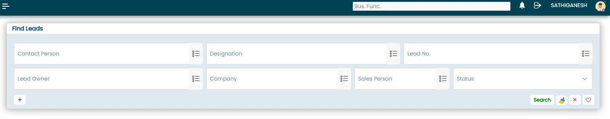
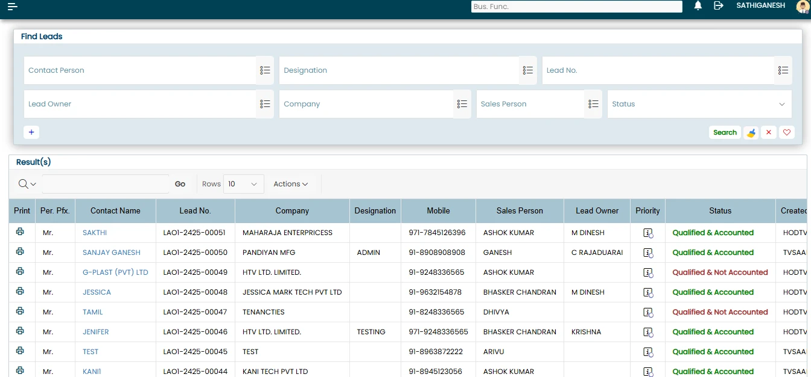
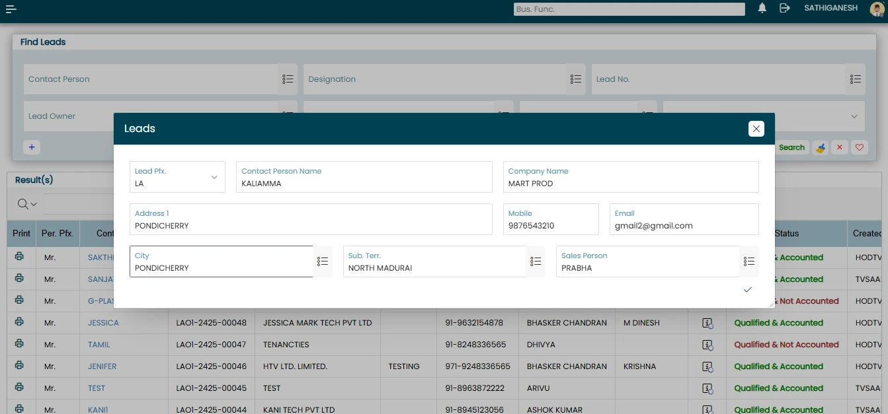
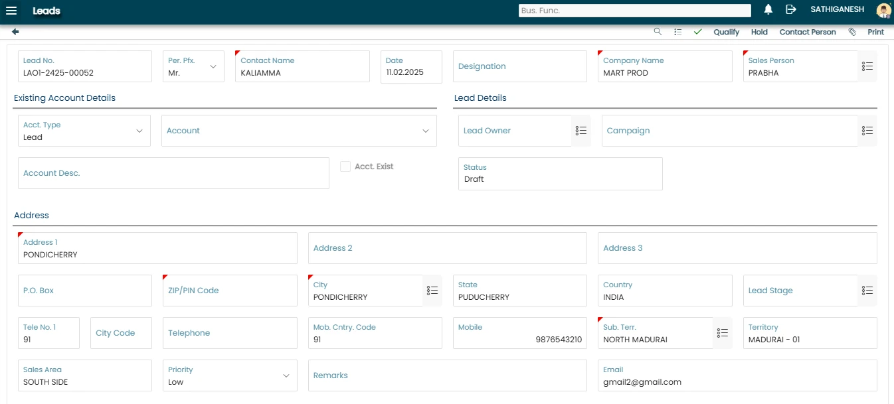

<div data-category="CRM" data-title="Leads" data-updated="December 01, 2025" data-contributors="RoadmapIT" data-breadcrumb="Home,CRM,Leads">
  <div class="page-content">
    <p>A lead refers to an individual or organization that has shown interest in your products or services but has not yet become a customer. Leads are potential customers who might be interested in what your business offers, and they are typically the first step in the sales process.</p>
    <h5>Navigation path:</h5>
    <p class="fs-6">CRM \ Transaction \ Leads</p>
    
    <ul style="list-style-type: none; align-content: center">
      <li class="mouse-icon">Search screen displays the list of Leads with the relevant details and its status</li>
      <li class="mouse-icon">Click on Search to filter all the records</li>
    </ul>
    
    <ul style="list-style-type: none; align-content: center">
      <li class="mouse-icon">User can filter the respective documents by entering the search parameters at the header</li>
      <li class="mouse-icon">On clicking search button, system displays the results relevant to the search parameters entered</li>
      <li class="mouse-icon">Using  icon, entered search parameters can be cleared</li>
      <li class="mouse-icon">To close the screen, use <i class="bi bi-x fs-4 mx-2 text-danger"></i> icon.</li>
      <li class="mouse-icon">By Clicking the <i class="bi bi-plus fs-4 mx-2 text-primary"></i> Add button we can create new Leads. The Lead details given are populated to the transaction screen once executed</li>
    </ul>
    
    <ul style="list-style-type: none; align-content: center">
      <li class="mouse-icon">Select the Lead Prefix</li>
      <li class="mouse-icon">Enter the Contact Name</li>
      <li class="mouse-icon">Enter the Company name</li>
      <li class="mouse-icon">Enter the Address</li>
      <li class="mouse-icon">Enter the mobile number & Email</li>
      <li class="mouse-icon">Choose the City</li>
      <li class="mouse-icon">Enter the Sub Territory Details and Save</li>
      <li class="mouse-icon">Enter the Sales Person</li>
      <li class="mouse-icon">Click on <i class="bi bi-check-lg fs-4 mx-1 text-success"></i> button to create the Leads</li>
    </ul>
    
    <ul style="list-style-type: none; align-content: center">
      <li class="mouse-icon">Once the lead is created, the Other information such as Acct. Type, Lead Details, Lead Stage, Priority are selected</li>
      <li class="mouse-icon">Add the Contact person details</li>
      <li class="mouse-icon">Click on Qualify button to qualify the lead</li>
      <li class="mouse-icon">To Disqualify the Lead, click on Disqualify button, once disqualified the record will be deleted from here</li>
      <li class="mouse-icon">Select the Hold button to hold the Lead</li>
      <li class="mouse-icon">Select the Un hold button to Un-freeze the Lead</li>
      <li class="mouse-icon">Click on Print button to view the lead report</li>
    </ul>
  </div>
</div>